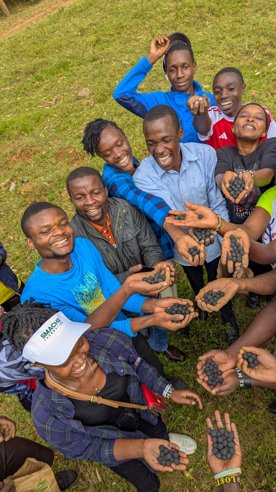
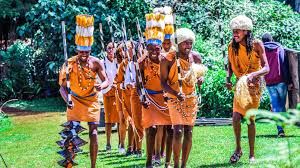
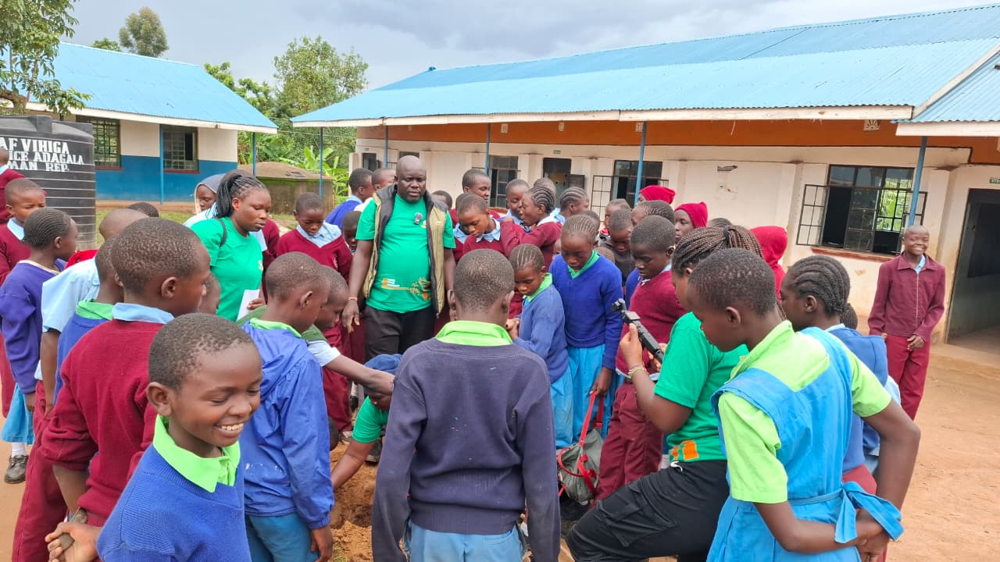

Our programs are the living embodiment of our mission. They are carefully designed to transform indigenous knowledge from memory into meaningful action.

Documenting Voices, Preserving Heritage. We partner with community elders as our living libraries. Through respectful audio-visual recordings, we capture stories, folklore, narratives on traditional practices, and ecological knowledge that are at risk of being lost. This program creates a digital and physical archive for education and cultural continuity.
Activities:
• Scheduled storytelling sessions and interviews with elders.
• Translation and transcription of recordings.
• Creation of educational kits for schools and anthologies.

Every Story Plants a Seed. This is our flagship environmental action program. We organize community Story Circles where the act of planting native tree species is preceded by storytelling sessions about that tree's cultural significance such as medicinal uses, and role in the local ecosystem.
Key Activities:
• Seasonal native tree planting drives.
• Distributing seedlings alongside printed folktales.

Celebrating Our Heritage, Protecting Our Home. An annual community festival that is a vibrant showcase of our mission. It's a day of performance, learning, and collective action that brings the entire community together.
Key Activities:
• Traditional music, dance, interactive storytelling and drama performances.
• Exhibits on indigenous conservation practices.
• Eco-friendly crafts and traditional food fairs.

Empowering the Next Generation of Stewards. We invest in passionate young individuals, training them to be bridges between knowledge and action while infusing digital communication with indigenous knowledge. These ambassadors learn documentation skills, environmental management, and community mobilization.
Key Activities:
• Bi-monthly workshops on leadership and indigenous knowledge.
• Mentorship pairings with community elders.
• Peer-to-peer environmental education in schools.
• Leading mini-projects in local hubs.